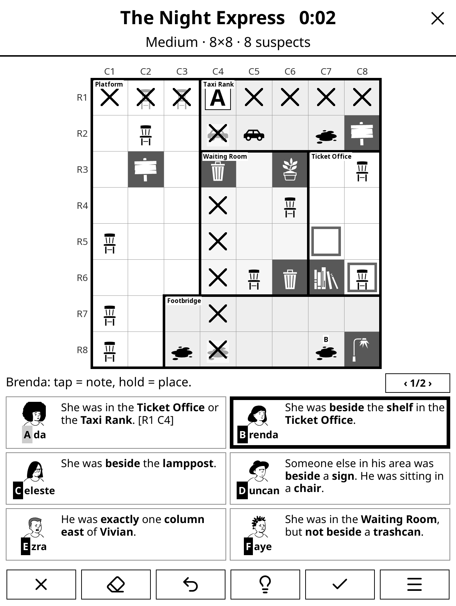
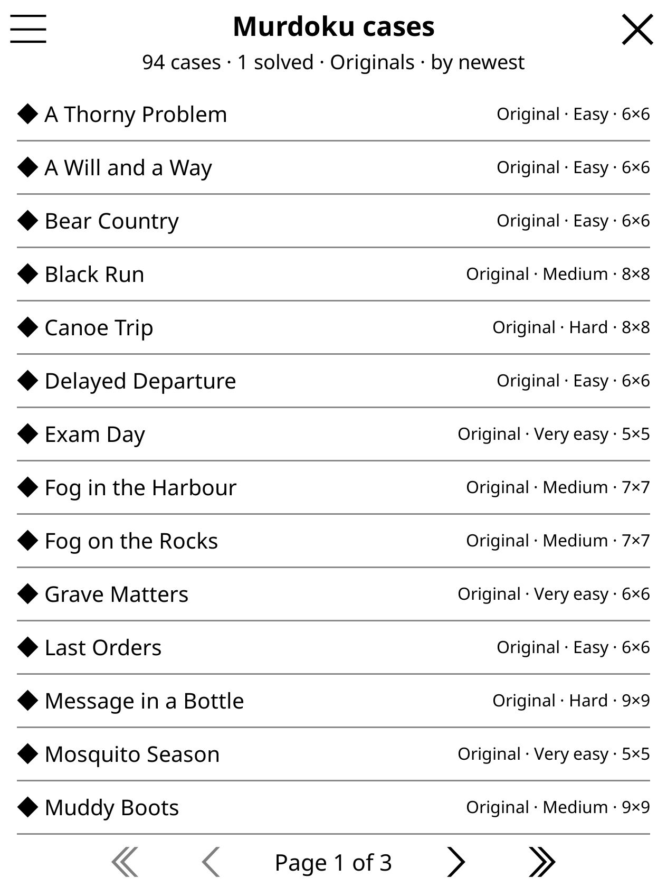
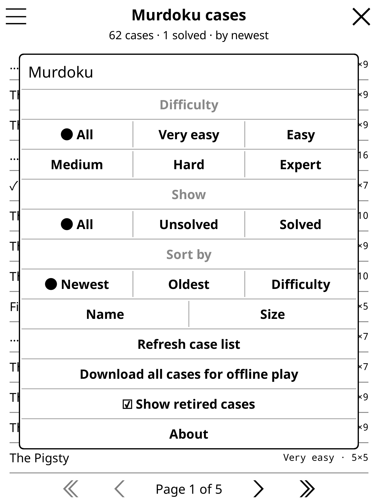
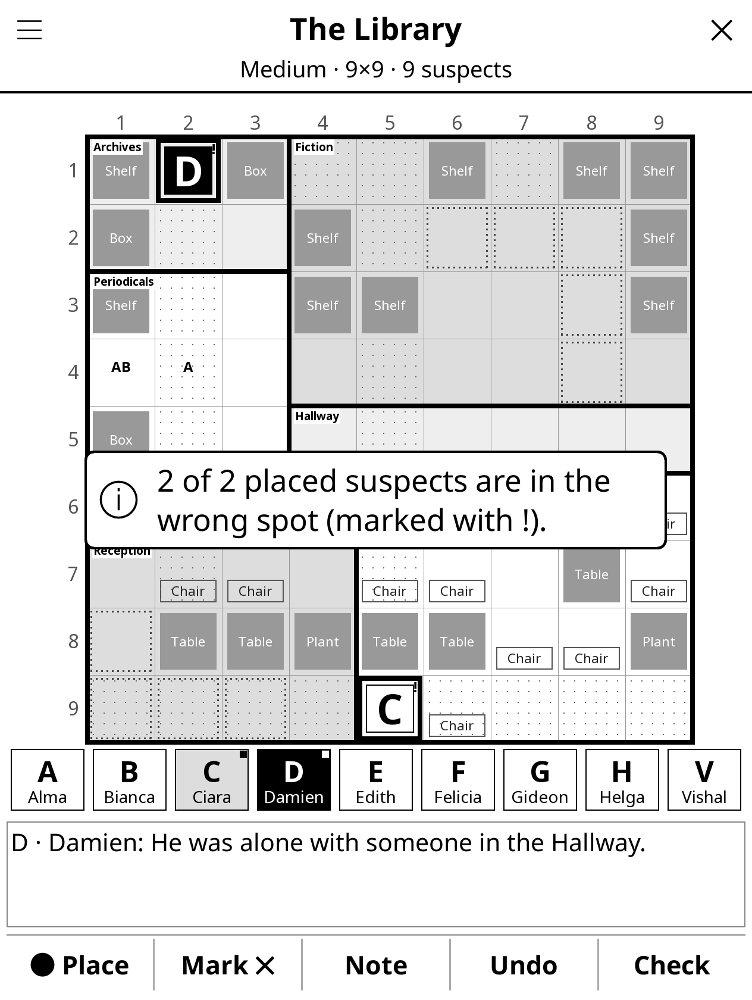
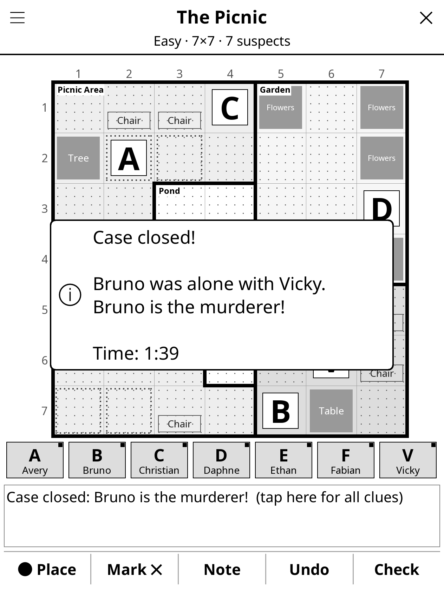
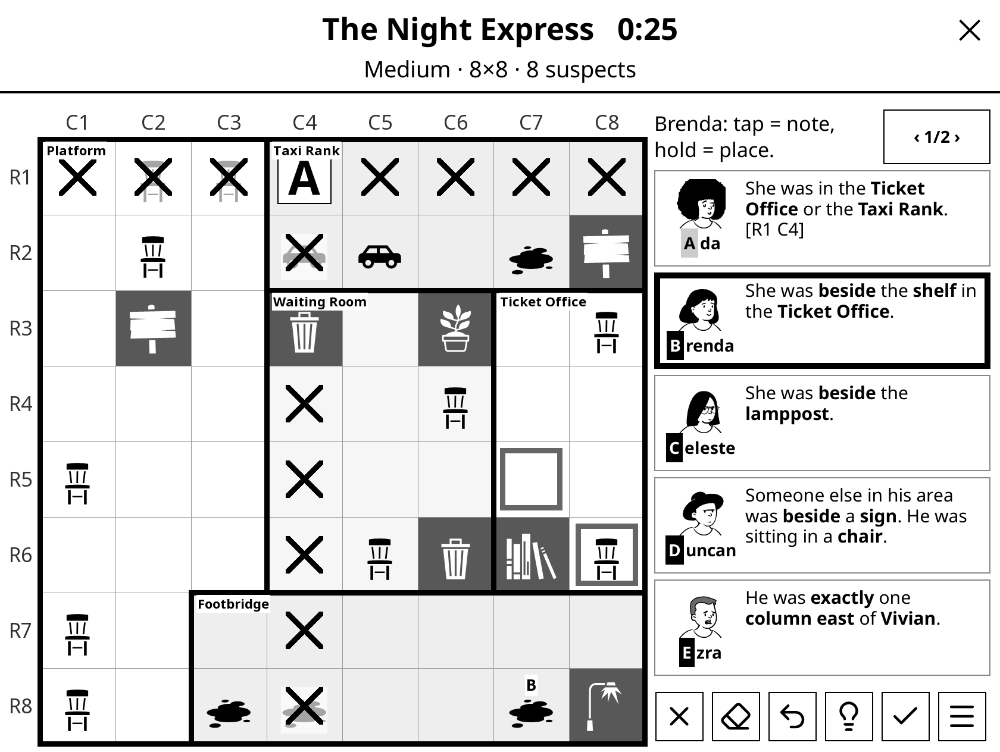

Play the free Murdoku logic-mystery cases on your Kindle or Kobo. Place every suspect on the crime scene, follow the clues, and find out who was alone with the victim. It's built for touch, so no stylus is needed, and it works offline.
Free and open source (MIT). Puzzles by Manuel Garand at murdoku.com.

Every control is a tap, hold or swipe, sized for a 6–7" touchscreen and drawn in crisp greys that look sharp on e-ink.
Tap a suspect, tap a square. Swipe across a row to cross it out. Hold any square to see what's in it.
Every move is saved as you go. Undo all the way back, even after closing the case or restarting the Kindle.
One tap downloads every free case to your device. The case list and your progress work without Wi-Fi.
Browse by difficulty, from Very easy to Expert, hide solved cases, and sort by newest, size or name. The newest case is starred.
In landscape the board moves left and the clues sit beside it. Grids from 5×5 up to 16×16 fit, including non-square ones.
Reveal step-by-step hints one at a time, check your board for misplaced suspects, or reveal the solution.
Real screenshots from KOReader at Kindle Paperwhite resolution (1264 × 1680, 300 dpi).





Rotate the Kindle from the case menu or with KOReader's own rotation gestures. The layout rebuilds instantly: board on the left, suspects, clue and controls on the right.
Wide boards, like an 11×9 dockside, use the whole screen in either orientation.
Works on any device running KOReader with a touchscreen: Kindle, Kobo, PocketBook, Android and more.
Grab murdoku.koplugin.zip from the latest release and unzip it.
Connect your e-reader over USB and copy the murdoku.koplugin folder into koreader/plugins/.
Restart KOReader, then open Tools → Murdoku. Turn on Wi-Fi the first time to fetch the case list.
Using Storefront? Once it appears in their catalog, search for murdoku to install and get updates right on the device.
Place every character on the crime scene, then reveal the killer.